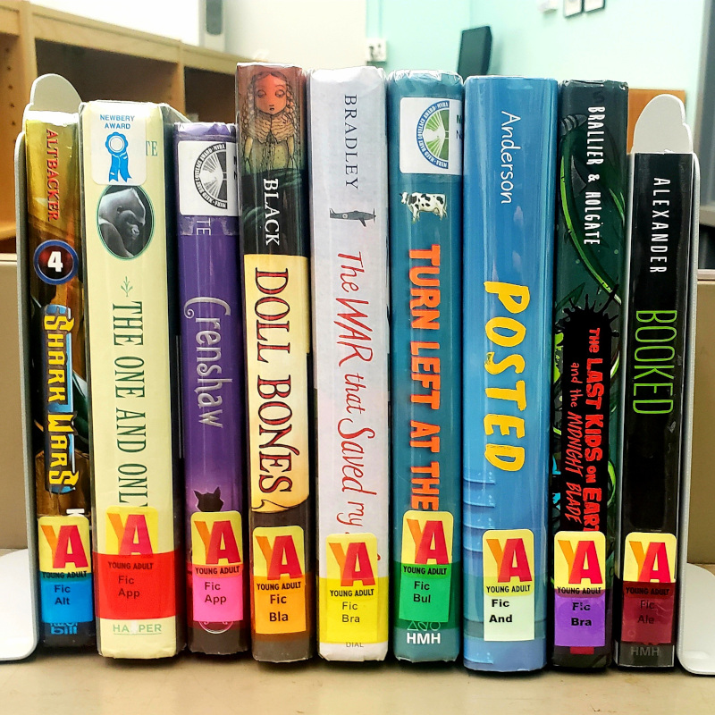
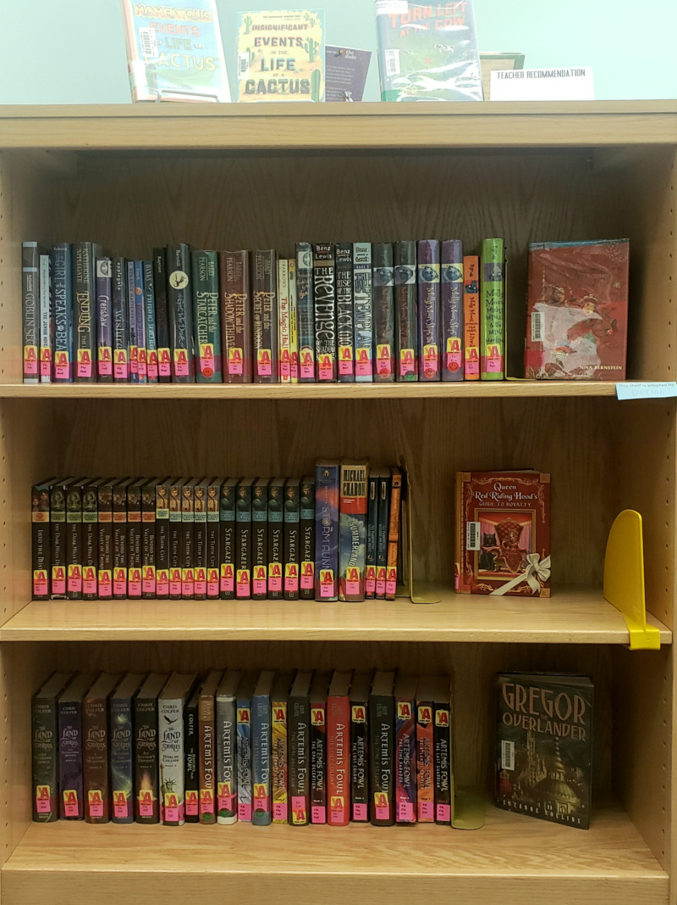
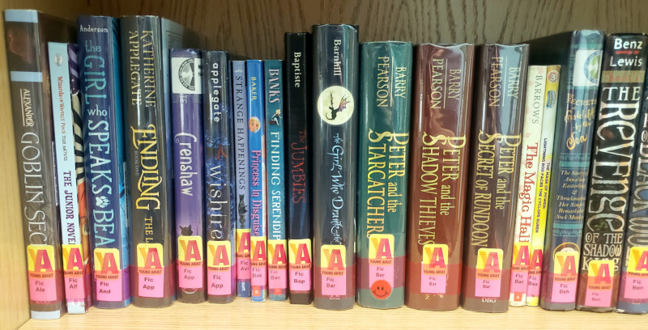

LOCATING BOOKS BY GENRE IN THE MEDIA CENTER
This page is a guide to how the new genre system will look in the media center.
Genres as Color-Coded Spine Labels
In the new media center genre system, every book will have a color-coded sticker on the spine to mark the main genre of the book. Each genre will have its own section, so all books will be sorted first by genre (color) and then alphabetically by author’s last name.
The nine color labels for each genre will be: blue (adventure), bright red (animals), pink (fantasy), orange (horror), yellow (historical), dark green (mystery), light green (realistic), purple (sci-fi), and dark red (sports). The color labels will always be over the call number — the label on the edge of the book that shows where the book belongs on the shelf.

Every Color (Genre) as a Shelf Section
Each genre will have its own section of shelves. The image below shows what the fantasy section looks like. All of the books with pink labels on the spine mean that the books on these shelves feature fantasy elements like magic, mythical creatures, and imaginary places.

Looking a little closer at one shelf, the books will still be arranged alphabetically within their color code. That means that books will still be ordered by the author’s last name on the shelf.

If you have any questions about how to find books by genre while you are in the library, ask Ms. Katie! Once you understand how genres work, it is much easier to find books you might be interested in.